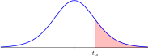

Section B.2 Student's t Distribution
¶
| \(df\) | \(t_{0.100}\) | \(t_{0.050}\) | \(t_{0.025}\) | \(t_{0.010}\) | \(t_{0.005}\) | ||||||
| \(1\) | 3.078 | 6.314 | 12.706 | 31.821 | 63.657 | ||||||
| \(2\) | 1.886 | 2.920 | 4.303 | 6.965 | 9.925 | ||||||
| \(3\) | 1.638 | 2.353 | 3.182 | 4.541 | 5.841 | ||||||
| \(4\) | 1.533 | 2.132 | 2.776 | 3.747 | 4.604 | ||||||
| \(5\) | 1.476 | 2.015 | 2.571 | 3.365 | 4.032 | ||||||
| \(6\) | 1.440 | 1.943 | 2.447 | 3.143 | 3.707 | ||||||
| \(7\) | 1.415 | 1.895 | 2.365 | 2.998 | 3.499 | ||||||
| \(8\) | 1.397 | 1.860 | 2.306 | 2.896 | 3.355 | ||||||
| \(9\) | 1.383 | 1.833 | 2.262 | 2.821 | 3.250 | ||||||
| \(10\) | 1.372 | 1.812 | 2.228 | 2.764 | 3.169 | ||||||
| \(11\) | 1.363 | 1.796 | 2.201 | 2.718 | 3.106 | ||||||
| \(12\) | 1.356 | 1.782 | 2.179 | 2.681 | 3.055 | ||||||
| \(13\) | 1.350 | 1.771 | 2.160 | 2.650 | 3.012 | ||||||
| \(14\) | 1.345 | 1.761 | 2.145 | 2.624 | 2.977 | ||||||
| \(15\) | 1.341 | 1.753 | 2.131 | 2.602 | 2.947 | ||||||
| \(16\) | 1.337 | 1.746 | 2.120 | 2.583 | 2.921 | ||||||
| \(17\) | 1.333 | 1.740 | 2.110 | 2.567 | 2.898 | ||||||
| \(18\) | 1.330 | 1.734 | 2.101 | 2.552 | 2.878 | ||||||
| \(19\) | 1.328 | 1.729 | 2.093 | 2.539 | 2.861 | ||||||
| \(20\) | 1.325 | 1.725 | 2.086 | 2.528 | 2.845 | ||||||
| \(21\) | 1.323 | 1.721 | 2.080 | 2.518 | 2.831 | ||||||
| \(22\) | 1.321 | 1.717 | 2.074 | 2.508 | 2.819 | ||||||
| \(23\) | 1.319 | 1.714 | 2.069 | 2.500 | 2.807 | ||||||
| \(24\) | 1.318 | 1.711 | 2.064 | 2.492 | 2.797 | ||||||
| \(25\) | 1.316 | 1.708 | 2.060 | 2.485 | 2.787 | ||||||
| \(26\) | 1.315 | 1.706 | 2.056 | 2.479 | 2.779 | ||||||
| \(27\) | 1.314 | 1.703 | 2.052 | 2.473 | 2.771 | ||||||
| \(28\) | 1.313 | 1.701 | 2.048 | 2.467 | 2.763 | ||||||
| \(29\) | 1.311 | 1.699 | 2.045 | 2.462 | 2.756 | ||||||
| \(30+\) | 1.282 | 1.645 | 1.960 | 2.326 | 2.576 | ||||||